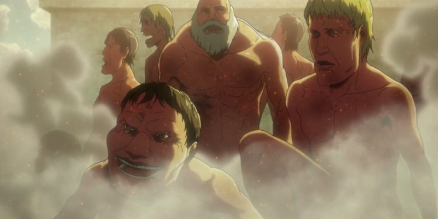
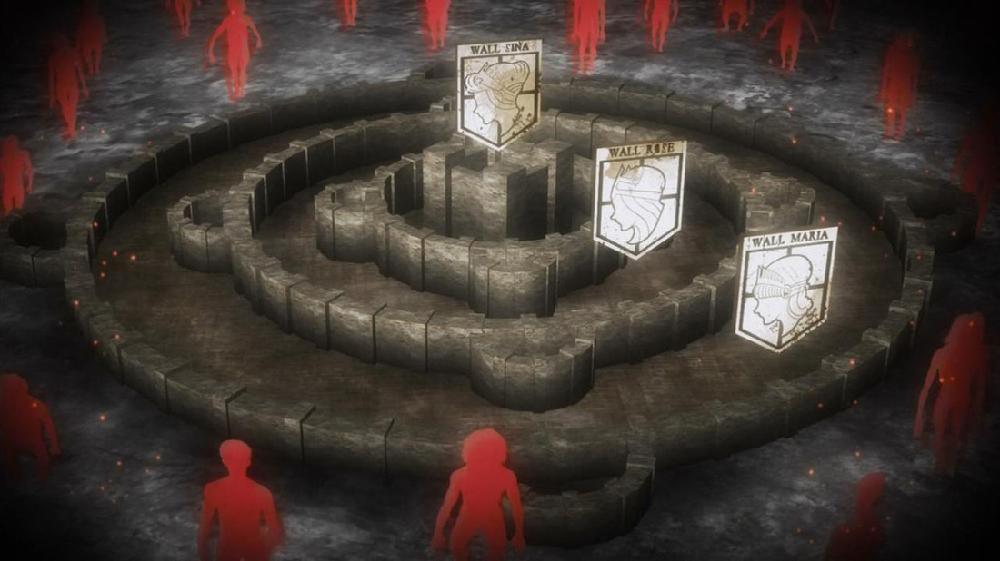

Início
Shingeki no Kyojin (Attack on Titan) se trata de uma série de mangá produzida por Hajime Isayama. E conta a história
de um mundo onde há várias décadas atrás, a humanidade foi quase exterminada pelo súbito aparecimento de
seres humanoides, conhecido como Titãs. Criaturas de tamanho enorme e de inteligência aparentemente baixa,
que comiam humanos por prazer. No entanto, um pequeno grupo de seres humanos sobreviveu no interior de uma
cidade protegida por paredes superiores a três vezes a altura dos maiores Titãs registados até à data.
Durante 107 anos, a cidade fortificada foi testemunha de ataques dos Titãs sem sucesso, até que um dia, o
jovem Eren Yeager e sua irmã adotiva, Mikasa Ackerman, foram testemunhas da aparição de um Titã colossal,
fazendo uma abertura em uma das paredes exteriores da cidade, o que permitiu a entrada de um grande grupo de
Titãs menores. Ambos os filhos presenciam o horror de ver sua mãe sendo comida viva por um deles. Desde
aquele dia, Eren jurou vingança contra cada um dos Titãs.
Os titãs são os principais antagonistas da série, e são seres humanóides, assustadores, que podem chegar de 3 até 20 metros de altura, e seu principal instinto é o de apenas devorar humanos. Eles são humanóides, mas não chegam e falar, e geralmente são pouco inteligentes, mas tem um enorme poder destrutivo e força. Vale ressaltar que para derrotar um titã, é necessário atingir um ponto específico, qur fica em sua nuca, geralmente os soldados os atingem com espadas, utilizando o apoio do DMT para isso.
As muralhas são enormes contruções que chegam até 50 metros de altura, de longas extensões e de forma circular, que ficam ao redor das cidades, oferecendo proteção contra os temíveis titãs. Elas são vigiadas pelas Tropas Estacionárias ou Guardas Estacionárias, que ficam no topo, observando qualquer tipo de movimentação. Além disso as muralhas são repletas de canhões, usados contra os titãs.
Elas são divididas em três: Muralha Maria, Muralha Rose e Muralha Sina, como mostra a imagem. E na muralha mais interior fica a família real.
O que são os titãs?
Os titãs são os principais antagonistas da série, e são seres humanóides, assustadores, que podem chegar de 3 até 20 metros de altura, e seu principal instinto é o de apenas devorar humanos. Eles são humanóides, mas não chegam e falar, e geralmente são pouco inteligentes, mas tem um enorme poder destrutivo e força. Vale ressaltar que para derrotar um titã, é necessário atingir um ponto específico, qur fica em sua nuca, geralmente os soldados os atingem com espadas, utilizando o apoio do DMT para isso.
As muralhas
As muralhas são enormes contruções que chegam até 50 metros de altura, de longas extensões e de forma circular, que ficam ao redor das cidades, oferecendo proteção contra os temíveis titãs. Elas são vigiadas pelas Tropas Estacionárias ou Guardas Estacionárias, que ficam no topo, observando qualquer tipo de movimentação. Além disso as muralhas são repletas de canhões, usados contra os titãs.
Elas são divididas em três: Muralha Maria, Muralha Rose e Muralha Sina, como mostra a imagem. E na muralha mais interior fica a família real.